網站開發流程介紹
網站開發步驟
1. 網站規劃
2. 網頁設計
3. 程式開發
4. 網站部署
5. 內容維護
確認功能需求
確認功能需求
- 服務對象、風格、色系
服務對象、風格、色系
 http://www.newsweek.com/
http://www.newsweek.com/
服務對象、風格、色系
http://riot.design/en/確認功能需求
- 風格/色系
- 頁面項目
頁面項目
| 項目 | 內容 |
|---|---|
| 首頁版面 |
|
| 關於我們版面 |
|
確認功能需求
- 風格/色系
- 頁面項目
- 功能
功能
前台
| 項目 | 內容 |
|---|---|
| 會員註冊/登入 | 提供使用者進行會員註冊與登入 |
| 訂閱電子報 | 提供使用者輸入Email，並且定期寄送網站最新資訊 |
功能
後台
| 項目 | 內容 |
|---|---|
| 會員管理系統 | 提供管理者進行會員資訊管理 |
| 電子報管理系統 | 提供管理者進行電子報新增與發送 |
Wireframe
線框稿，定義網站基本的框架
Wireframe
Wireframe linkMockup
視覺稿、定義網站字體設計、按鈕樣式、扁平化
Mockup
Mockup link
網頁設計
- 設計稿
- 切板
程式開發
- html
- css
- javascript
- 後端程式
後端程式
- PHP
- ASP.NET
- node.js
- Ruby on Rails
網站部署
內容維護
- 網站內容的更新：
- 網站最新消息
- Banner更換
- 電子報設計與寄送
Q & A
工作環境架設教學介紹
即時預覽的網頁開發編輯器
建立專案
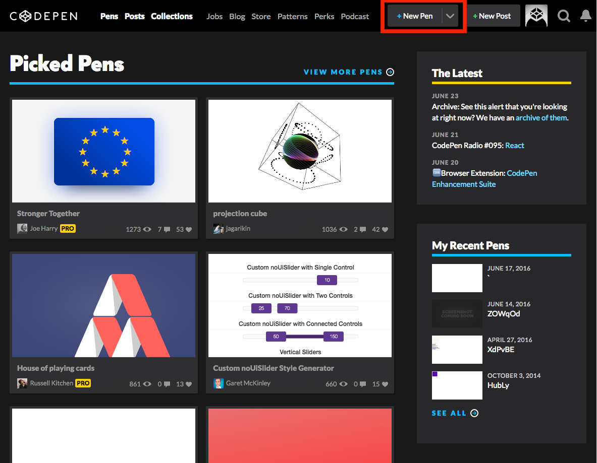撰寫HTML區塊
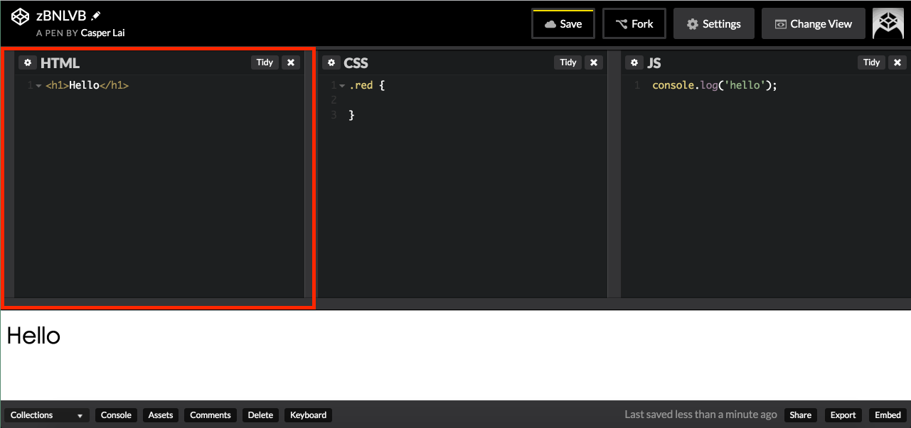撰寫CSS區塊
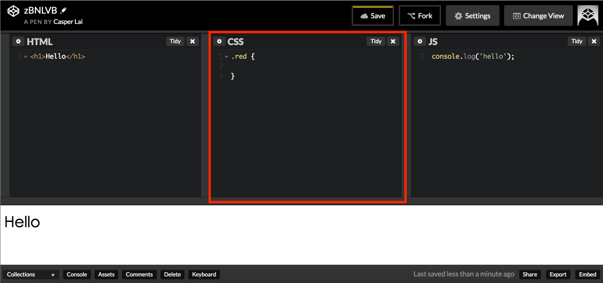撰寫JS區塊
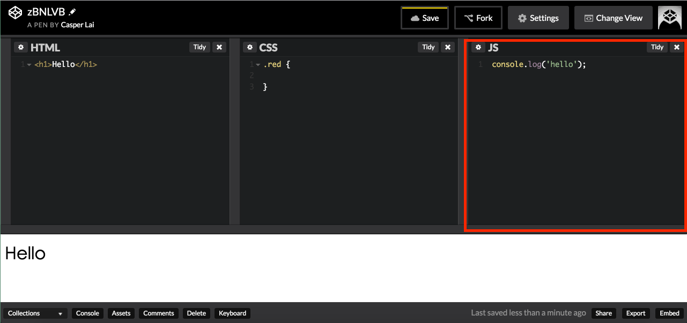顯示網頁呈現畫面
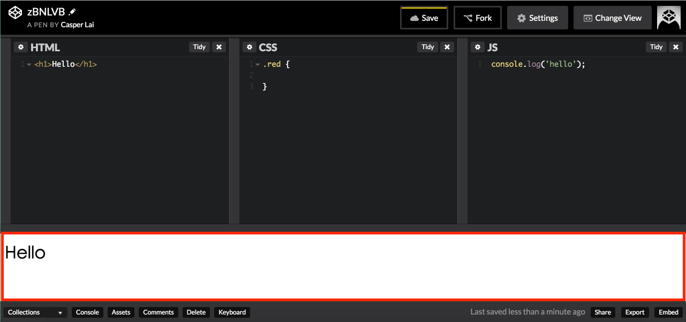改變畫面配置
選擇 Change View
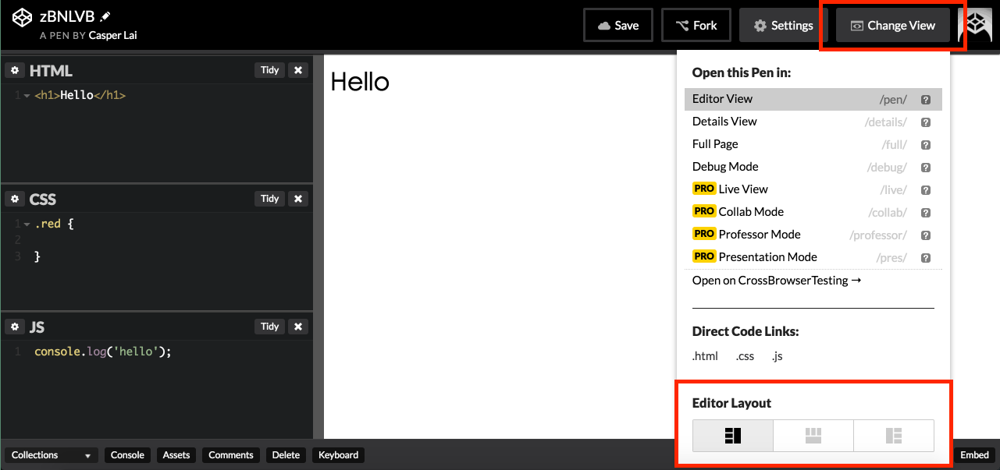分享Codepen
複製網址
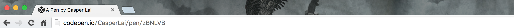輸出
Export.zip
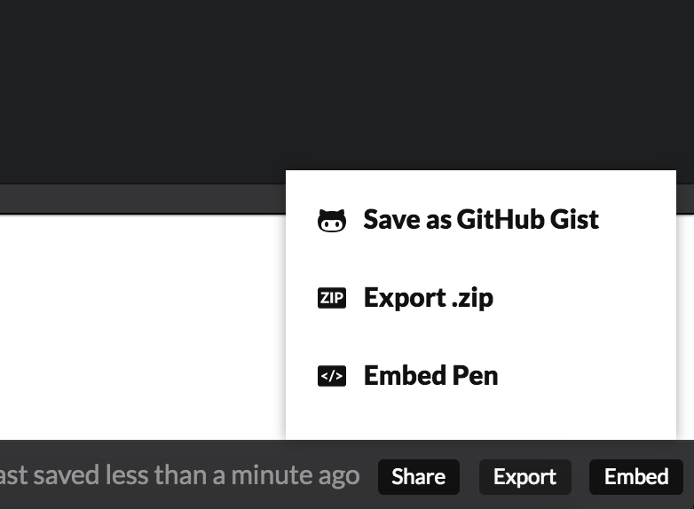Q & A
網頁工程的分工
- 前端工程
- 後端工程
前端
瀏覽器使用者介面
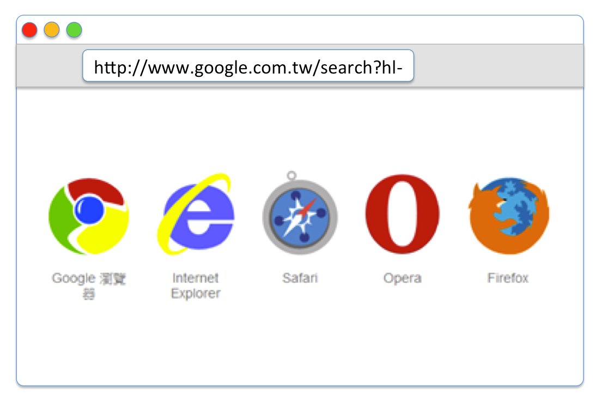後端
處理使用者請求的伺服器、資料庫
為什麼要分前後端?
- MVC（Model View Controller）等設計模式被發明
- AJAX技術盛行
- 使用者介面(UI)複雜度提高
- 便於維護
HTML 標籤
HTML 長這樣
<!DOCTYPE html>
<html lang="en">
<head>
<title>一份迷你文件</title>
</head>
<body>
<h1>文件中的主標題</h1>
<p>老媽我在這，我正在寫 <abbr title="Hyper Text Markup Language">HTML</abbr>！</p>
</body>
</html>
GOOGLE 首頁
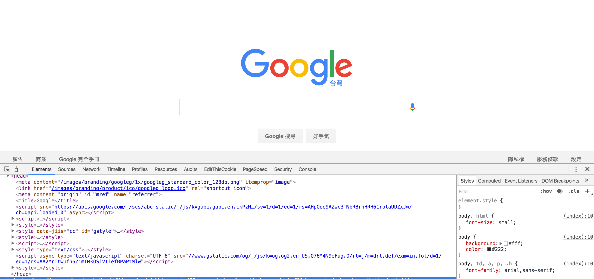開啟 chrome 到google首頁 -> ctrl + shift + i
<標籤> 他就像是一個盒子
盒子裡面有盒子，盒子裡面又有盒子....一直下去
有開頭，就會有結束
<div>我在盒子裡</div>
But....就是有人喜歡不一樣
<img src="img/box.jpg" alt="" />
<br/>
<input type="text" name="name" value="">
文件的標籤
HTML
整個網頁最外層的標籤，所有標籤都會在 html 標籤內。
<html>...</html>
HEAD
head 中，通常拿來放置特定標籤(如:title)，及樣式表(style)、腳本(script)、meta 標籤。
<head>...</head>
TITLE
在瀏覽器頁籤上看到的文字。
<title>金門你好!</title>
BODY
在網頁中，所有看到構成的畫面，都會放在這個標籤底下。
<body>.....</body>
範例
動手做做看，5分鐘。
<html>
<head>
<title>金門</title>
</head>
<body>
金門你好!!!
</body>
</html>
放在 HEAD 中的標籤
META
meta 標籤的用處非常廣泛，可運用在SEO、網頁描述、介紹、作者...等，分享到 FB 上的資訊也可經由 meta 標籤設定。
<head>
<meta charset="UTF-8">
<meta name="description" content="Free Web tutorials">
<meta name="keywords" content="HTML,CSS,XML,JavaScript">
<meta name="author" content="Hege Refsnes">
</head>
LINK
用來讀取外部的 CSS 樣式檔案。
<head>
<link rel="stylesheet" type="text/css" href="theme.css">
</head>
STYLE
可直接在頁面上撰寫 CSS 樣式，但別的頁面就沒辦法讀到，如果有共用的樣式，使用 LINK 標籤匯入較方便日後修改。
<style media="screen">
.list {
background-color: #ffffff;
}
</style>
SCRIPT
可以直接撰寫腳本語言，或著寫在外部用 script 標籤來引入檔案。
<script>
document.getElementById("demo").innerHTML = "Hello JavaScript!";
</script>
<!-- HTML4 and (x)HTML -->
<script type="text/javascript" src="javascript.js"></script>
<!-- HTML5 -->
<script src="javascript.js"></script>
範例
動手做做看，5分鐘。
<head>
<meta charset="UTF-8">
<meta name="description" content="Free Web tutorials">
<meta name="keywords" content="HTML,CSS,XML,JavaScript">
<meta name="author" content="Hege Refsnes">
<title>金門</title>
<link rel="stylesheet" href="https://maxcdn.bootstrapcdn.com/bootstrap/3.3.6/css/bootstrap.min.css">
<script src="https://maxcdn.bootstrapcdn.com/bootstrap/3.3.6/js/bootstrap.min.js"></script>
<script type="text/javascript">
var MyVar = 0;
</script>
</head>
BODY 中常用的標籤
H1...H6
標題標籤，h1 為最大，內容中如果作為標題的文字，建議使用標題標籤包覆。
<h1>文章1</h1>
DIV
使用頻率最高的標籤，可以把它當作其他任意內文標籤使用，但不建議(後面說明)。
<div>
<div>文章1</div>
<div>今天天氣真晴朗</div>
</div>
P
一段文字的描述，會使用此標籤包覆。
<div>
<h1>文章1</h1>
<div>
<p>今天天氣真晴朗</p>
</div>
</div>
SPAN
一段文字中，有些需要特別樣式的文字，可以用此標籤。
<div>
<h1>文章1</h1>
<div>
<p><span>最新!</span>今天天氣真晴朗</p>
</div>
</div>
LINK
連結到其他網址使用。
<!-- LINK -->
<a href="https://www.facebook.com/" name="fb_link">facebook</a>
<!-- EMAIL -->
<a href="mailto:azraelxuan927@gmail.com">azraelxuan927@gmail.com</a>
<!-- 錨點 -->
<a href="#question1">移動到問題一</a>
<div id="question1">1. 為什麼不要都用DIV?</div>
IMG
顯示圖片使用此標籤。
<img src="img/htmlTagPostExample.png" alt="" />
為什麼不建議都用 DIV 標籤?
全部都使用 div 標籤，沒有辦法一眼看出整個架構，會讓維護的效率降低，因此，語意化結構就非常重要。
<div>
<div>文章1</div>
<div><div>最新!</div>今天天氣真晴朗</div>
</div>
<div>
<h1>文章1</h1>
<div>
<p><span>最新!</span>今天天氣真晴朗</p>
</div>
</div>
動手試試看(10分鐘)
- 1. 請上網找一篇文章，並運用上述標籤把文章結構完成。
- 2. 需符合語意化結構
表格,列表,表單標籤
UL, OL
li 列表的外框，OL會自動產生編號，UL則為符號。
<ol>
<li>A</li>
<li>B</li>
<li>C</li>
<li>D</li>
<li>E</li>
</ol>
<ul>
<li>A</li>
<li>B</li>
<li>C</li>
<li>D</li>
<li>E</li>
</ul>
LI
列表項目。
<ul>
<li>A</li>
<li>B</li>
<li>C</li>
<li>D</li>
<li>E</li>
</ul>
TABLE
表格
<table>
<thead>
<tr>
<th>ISBN</th>
<th>Title</th>
</tr>
</thead>
<tbody>
<tr>
<td>3476896</td>
<td>My first HTML</td>
</tr>
<tr>
<td>5869207</td>
<td>My first CSS</td>
</tr>
</tbody>
<tfoot>
<tr>
<td>ISND</td>
<td>TITLE</td>
</tr>
</tfoot>
</table>
FORM
表單
<form action="demo_form.asp" method="get">
姓名: <input type="text" name="name"><br>
電話: <input type="text" name="phone"><br>
<input type="submit" value="送出">
</form>
INPUT
輸入框
name: <input type="text" name="name"><br />
password: <input type="password" name="pwd"><br />
<input type="radio" name="num" value="1"> 1
<input type="radio" name="num" value="2"> 2
<input type="radio" name="num" value="3"> 3
<input type="submit" value="送出"><br />
<input type="button" name="name" value="GO">
TEXTAREA
文字區塊
<textarea rows="4" cols="50">
網頁課程
</textarea>
SELECT
下拉選單
<select>
<option value="1">1</option>
<option value="2">2</option>
<option value="3">3</option>
<option value="4">4</option>
</select>
BUTTON
按鈕
<button type="button">按我!</button>
動手試試看(10分鐘)
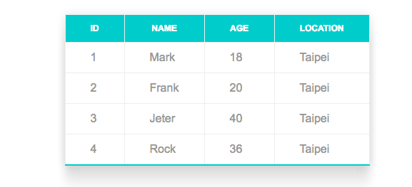- 1. 建立一個如上圖相同欄位的表格。
- 2. 如果你會 css 可以試著做做看。